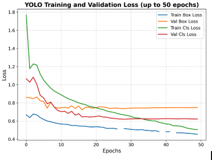
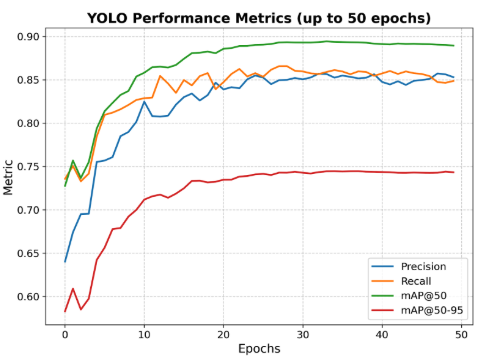

AI for Farmers
YOLOv8 + RAG for plant disease detection & advisory
An open-source prototype that combines YOLOv8 for image-based plant disease detection with a retrieval-augmented advisory system built using LangChain. Designed for smallholder farmers facing climate stress, connectivity gaps, and pesticide risks.
Plant disease, food security & pesticide risk
Plant diseases cause up to 40% of global crop yield losses, equivalent to more than USD 220 billion annually. Smallholder farmers in Africa and other resource-constrained regions are especially vulnerable: crop failures erode household income, worsen malnutrition, and increase exposure to climate-related shocks.
Without timely diagnosis, many farmers default to broad-spectrum pesticide use. While this can help in the short term, excessive pesticide application contaminates soil and water, harms biodiversity, and increases health risks for farmers and their families.
Framed through the One Health lens, plant health is tightly linked to human nutrition, animal well-being, and ecosystem resilience. Safer, evidence-based plant disease management is a direct lever for healthier communities and landscapes.
What this project set out to build
- Enable on-device, near real-time diagnosis using plant leaf images.
- Deliver farmer-friendly advisory guidance rooted in validated literature.
- Prioritize non-chemical, sustainable practices with safe, last-resort chemical options.
- Work in low-connectivity, low-resource rural settings.
- Align the system with One Health principles and climate adaptation needs.
From leaf photo to farmer-friendly advice
The prototype, named AI-ɛ, integrates a YOLOv8-based detection module with a retrieval-augmented advisory module. The system supports four major crops (cashew, cassava, maize, tomato) and 20 disease classes from the CCMT dataset.
- YOLOv8m detection: Identifies disease regions in plant leaf photos.
- Curated knowledge base: Agricultural extension manuals and scientific literature are ingested, chunked, embedded, and indexed.
- RAG-style advisory: For each detected disease, the system retrieves relevant passages and generates structured, farmer-oriented prevention and treatment guidance.
- Offline-friendly design: Advisory content is precomputed and stored, reducing dependency on continuous internet access.
Detection module (YOLOv8m)
- Trained on 13,519 images (20 classes).
- Real-time object detection of disease symptoms.
- Robust to multi-lesion cases and mixed crops.
Advisory module (RAG-inspired)
- Retrieves guidance from curated extension PDFs.
- Structured output: prevention, treatment, when-to-seek help.
- Rule-based safeguards around chemical advice.
Two-phase pipeline for low-resource deployment
Build a structured disease knowledge base
- Curate agricultural extension manuals & scientific articles in PDF.
- Use LangChain PDF loaders and recursive text splitters.
- Generate vector embeddings via OpenAI embedding models.
- Store embeddings in a local vector database.
- Generate structured CSV catalog with standardized prevention & treatment entries.
Turn an image into a tailored advisory
- Farmer uploads a plant leaf image through the web app.
- YOLOv8m detects bounding boxes and disease classes.
- The advisory module matches disease labels to catalog entries.
- Farmer receives prevention & treatment guidance in real time.
System architecture (Figure)
Offline preprocessing (LLM summarization & embeddings) builds the disease catalog; at runtime, YOLOv8 detects plant diseases and the retrieval module delivers farmer-friendly advisory guidance.

Offline LLM summarization & embeddings → disease catalog → YOLOv8 detection → retrieval-based advisory guidance delivered to farmers.
CCMT dataset & YOLOv8m optimization
The system uses the Crop Pest and Disease Detection Dataset (CCMT), collected in Ghana and validated by expert plant virologists and pathologists. After cleaning and class balancing, the final dataset contains:
- 13,519 raw images across 20 crop–disease classes.
- 4 crops: cashew, cassava, maize, tomato.
- Train/val/test split: 92% / 4% / 4% (Roboflow).
- Data augmentation (~3×) via flipping, cropping, and ±10% photometric adjustments.
All images were resized to 640×640 pixels. Annotations were created manually in Roboflow with bounding boxes around visible disease symptoms, ensuring high-quality labels.

Training and validation loss curves showing onset of overfitting after epoch 50.

Precision, recall and mAP trends across epochs, highlighting the chosen checkpoint.
Detection performance across 20 crop–disease classes
At epoch 50, the YOLOv8 model achieved a strong trade-off between accuracy and generalization, avoiding overfitting observed at later epochs. Key metrics on the held-out test set:
Performance varies by symptom distinctiveness
| Crop / Disease | mAP@50–95 | F1 |
|---|---|---|
| Cassava mosaic | 0.980 | 0.994 |
| Cashew red rust | 0.970 | 0.978 |
| Cassava green mite | 0.970 | 0.945 |
| Cassava brown spot | 0.240 | 0.591 |
| Cassava bacterial blight | 0.348 | 0.702 |
| Maize leaf spot | 0.411 | 0.614 |
The model excels on visually distinctive diseases (e.g., Cassava mosaic, Cashew red rust), while performance drops on diseases with overlapping or subtle symptoms (e.g., Cassava brown spot, Maize leaf spot), highlighting future work on data augmentation and class rebalancing.
From qualitative examples to full validation set coverage

YOLOv8 detections on cashew, cassava, maize, and tomato validation images, illustrating both single- and multi-lesion cases and separation of healthy vs diseased leaves.
Farmer-centered guidance with built-in safety rules
The advisory module turns technical literature into short, clear, and safe guidance for farmers. Each disease entry is generated using structured prompts that:
- Require at least two non-chemical measures before chemical options.
- Restrict chemical advice to active ingredients, not brand names.
- Exclude banned or highly hazardous pesticides (e.g., carbendazim, paraquat, monocrotophos).
- Specify triggers, repeat intervals, and explicit PPE and label reminders.
This design keeps the system predictable, auditable, and aligned with integrated pest management (IPM) principles, while still offering practical last-resort chemical options.

Generated from curated tomato disease literature and standardized for clarity, low literacy, and future multilingual adaptation.
Research, collaboration & open science
My contributions
- Conceptualization and One Health framing.
- Methodology, YOLOv8 training, and evaluation.
- RAG pipeline design and advisory safety constraints.
- Software implementation, visualization, and deployment.
- Original draft writing and manuscript preparation.
- Portfolio: aichutan.github.io
- Live prototype: Hugging Face Spaces – AI for Farmers
- Full paper (PDF): AI for Farmers – manuscript
- Conference presentation (PDF): Rome 2025 slide deck
- Poster: Conference poster (PNG)
- Conference: 4th International One Health Conference, Rome, 2025
Acknowledgements: Metabolism of Cities Living Lab (SDSU), UENR Ghana (CCMT dataset), and tooling from Roboflow, LangChain, Ultralytics YOLOv8, OpenAI, Streamlit, and Hugging Face.